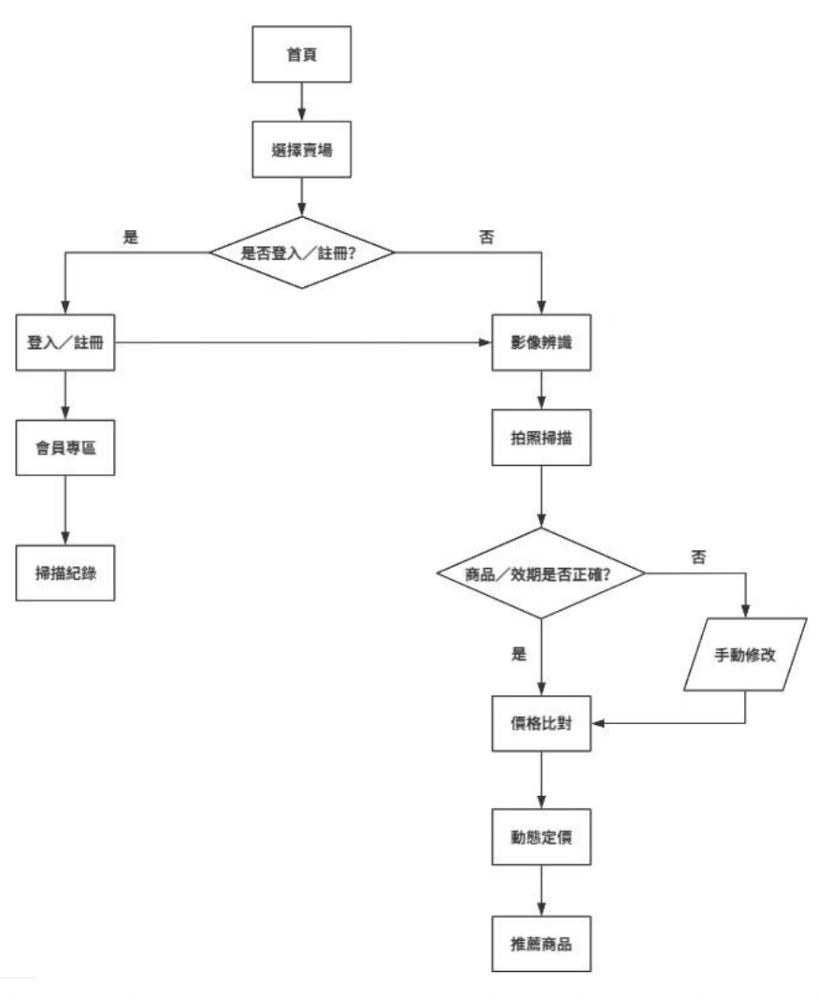
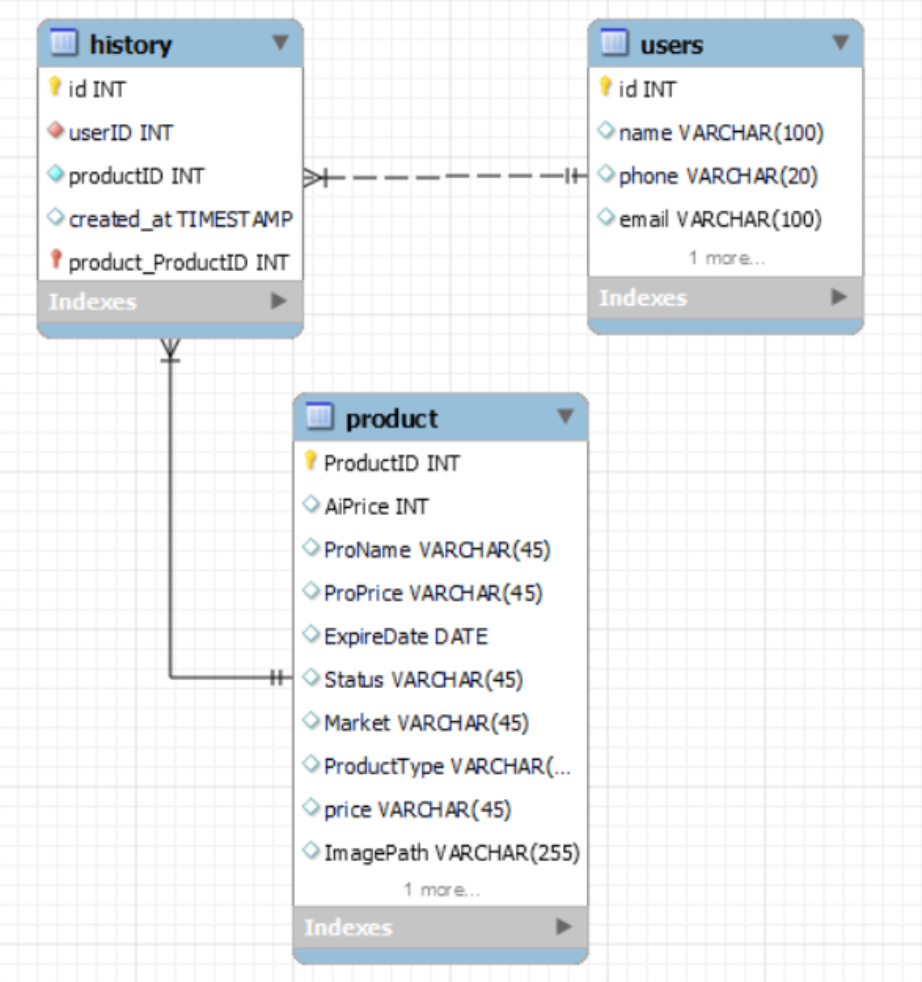

前端使用 Flutter 提供流暢跨平台體驗，後端以 Flask 處理 OCR 與 AI 推論，
資料庫採用 MySQL 儲存會員、商品與歷史紀錄，實現完整的前後端分離架構。

透過實體關係圖（ER Model）規範會員、商品、歷史紀錄等資料表結構與關聯，
確保後端查詢效率與推薦邏輯的一致性，提升系統可維護性與擴展性。
本系統的核心價值在於利用多維度數據訓練的隨機森林迴歸模型，輸出具有科學依據的價格建議。